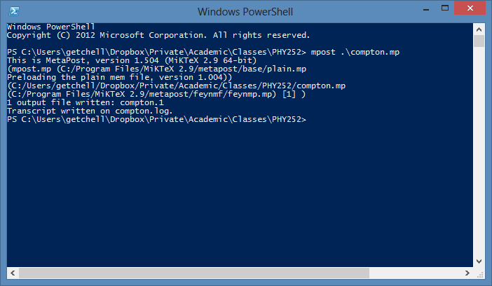

Sometimes you need Feynman diagrams in papers. It turns out there are quite a few ways to get there, but the handiest is FeynMP. I’m using, in particular, MikTeX and TeXMaker, but something like this should work for other setups. Here are the steps:
First, get the feynmf package from your package manager.
Next, add the following to your $\LaTeX$ preamble: I know the package name says feynmp; if you use that, you’ll have a lot more errors. The feynmp package is nicer, and included when you install feynmf.
[gist:id=3595449,file=feynmp-preamble.tex]
Now, let’s say you want to add a diagram for Compton scattering (the point of the whole exercise). I suggest wrapping it in a $\LaTeX$ figure for convenience; doing so will lead to something like this:
Note the name of the file is compton. In your $\LaTeX$ working directory, there will be a file called compton.mp. You need to run the mpost command on it, like so:

This generates compton.1. Now, compile your $\LaTeX$ (are you getting tired of the cute capitalization yet?) file again, and your diagram will appear!

Note that you’ll have to do this anytime you edit the figure (e.g. add labels, etc.)
But if you think this is a pain, try the alternatives!
Here’s a post that set me on the track: http://physical-thought.blogspot.com/2008/08/feynmf-feynman-diagrams-in-latex.html
Here’s the details on getting your preamble correct: http://tex.stackexchange.com/questions/20241/how-to-use-kile-with-feynmf-or-feynmp
Here’s a quick tutorial on using feyMP: http://suppiya.files.wordpress.com/2008/02/fmfsamples.pdf
Here’s a more in-depth tutorial by Thorsten Ohl, the author of feynMP/feynMF: http://xml.web.cern.ch/XML/textproc/feynmf.html
Here’s a quicker tutorial by Thorsten Ohl, https://docs.google.com/viewer?url=http://www-zeus.desy.de/~kind/latex/feynmf/fmfcnl3.ps&pli=1
And here’s the actual manual: http://www.pd.infn.it/TeX/doc/latex/feynmf/manual.pdf
Also, while we’re on the topic, this site had a lot of invaluable tips for formatting math symbols: http://www.math.uiuc.edu/~hildebr/tex/displays.html
I hope this shortens the learning curve for someone else! If you have any feedback or corrections, send notes or pull requests to the gists.
Happy $\LaTeX$-ing!